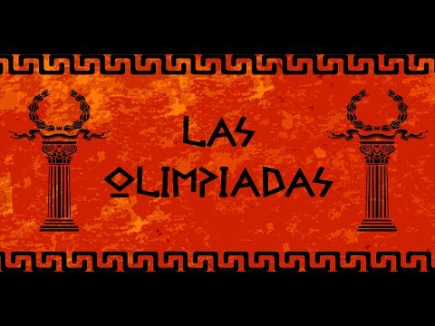
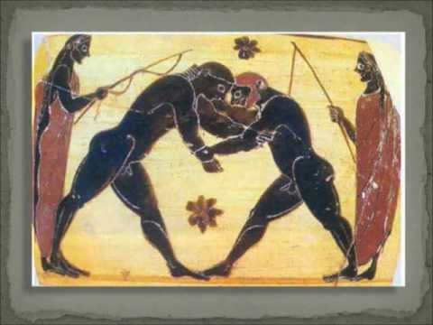

Las Olimpíadas son uno de los eventos más importantes que actualmente se realizan ya que congregan a todos los países del planeta. Las Olimpíadas representan la unión de todos los pueblos que cada cuatro años se reúnen en un lugar designado para celebrar diferentes tipos de deportes y competir sanamente en diversas disciplinas.
A partir del año 776 a.C., cuando se cree tuvo lugar el primer festival, los Juegos Olímpicos se han celebrado cada cuatrienio. Los Juegos que se llevaban acabo en Olimpia, Grecia, tenían un gran prestigio; los ganadores se convertían en héroes.
El lapso entre el inicio de un festival y otro se conocía como Olimpiada. En el año 300 a.C., los griegos confirmaron la importancia del festival fijando la fecha de cualquier evento de acuerdo con la Olimpiada en que sucedía.
Cuando se restauraron las Olimpiadas en 1894, los organizadores se inspiraron en los antiguos griegos y adoptaron el periodo de cuatro años. Sin embargo, no tuvieron éxito en revivir la costumbre de suspender las hostilidades durante los Juegos. En lugar de eso, no hay Olimpiadas durante la época de guerra.
Origenes de las olimpiadas

Se cree que el primer año en el que se celebraron las olimpiadas fue en el año 776 a.C., en Olimpia, Grecia
Project Title

Los Juegos Olímpicos, también conocidos como Olimpiadas, tratan hoy en día el enfrentamiento deportivo entre muy diversos países de todo el mundo. Pero, ¿Cómo y de que manera se formaron estos juegos? ¿Cómo llegamos a los Juegos Olímpicos modernos y cómo se formaron?
Juegos Olímpicos de la antigüedad:Antecedentes
Según está registrado oficialmente, fue un 1 de Julio del año 776 A.C. cuando nacieron las olimpiadas, nombre atribuido por la ciudad griega donde se inauguraron estos Juegos Olímpicos: Olimpia.
Así pues, la tradicional competición deportiva cuenta, como mínimo, con tres mil años de historia y se organizaba cada cuatro años. Aunque cabe destacar la posibilidad de que estos Juegos Olímpicos se remontaran a una época aun más lejana en el tiempo, ya que existen indicios en distintas leyendas que apuntan a que, sin ser oficiales ni estar registradas, sí se celebraban competiciones antes de las celebradas en el año 776 A.C.
Ya en aquella inauguración de finales del siglo octavo antes de Cristo, celebrada al pie del monte Kronion, se reunieron diferentes atletas procedentes de distintas regiones de Grecia que competían entre sí, descalzos y sin ropa, en diversas especialidades deportivas de la época.
Project Title
1. Juegos Olímpicos desnudos
Entre los deportes, está la gimnasia, palabra que proviene de gymnos que significa desnudez. Esto, porque en la Antigua Grecia, los juegos olímpicos se realizaban desnudos, para resaltar la belleza de la figura humana.
2. Primera Maratón de la historia
En el año 490 a.C. Atenas tuvo una batalla contra invasores persas, de la cual salió victoriosa. Filípides, un soldado griego, corrió desde Maratón hacia Atenas para dar la gran noticia, porque si no llegaba a tiempo, los atenienses quemarían la ciudad y matarían a los niños pensando que habían sido derrotados.
Fueron aproximadamente 40 kilómetros que recorrió y sumado con la geografía llena de colinas, hizo que se fatigara. A pesar de esto logró llegar, con los pies ensangrentados a dar la gran noticia, pero fue lo único que alcanzó a hacer, porque cayó muerto en el acto.
En su honor, en los primeros Juegos Olímpicos modernos, en 1896, se hizo una carrera con una distancia muy similar a la recorrida por Filípides, todo esto en su conmemoración.
3. La distancia de la maratón actual se decidió para mantener a la Reina seca.
Pero... ¿Por qué la distancia oficial de la Maratón tiene más de 2 kilómetros extra? Esto fue porque a lo largo de los años, dependiendo del lugar donde se realizaran los Juegos Olímpicos, la distancia se iba modificando, pero llegó un punto en que decidieron oficializar la distancia.
Esto fue hasta los Juegos Olímpicos de Londres en 1908, porque primero se fijaron 38 km, pero se dice que el Príncipe de Gales, Jorge V, quiso la salida antes, en el Castillo de Windsor porque ese día llovía y no querían que la Reina se mojara. La distancia quedó en 42,195 kilómetros, la cual finalmente se oficializó.